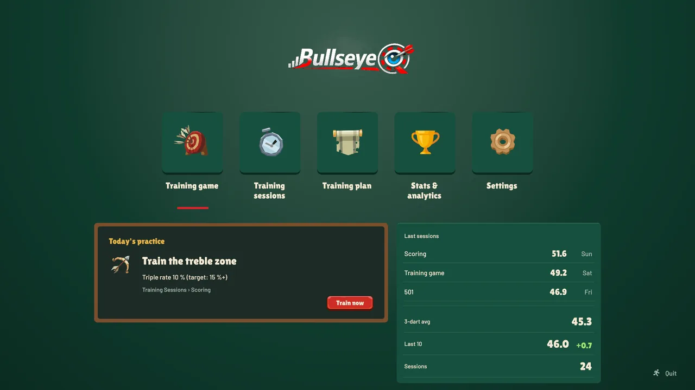
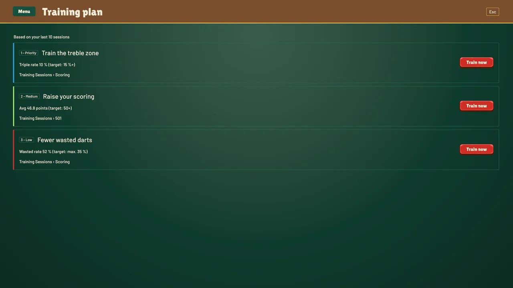
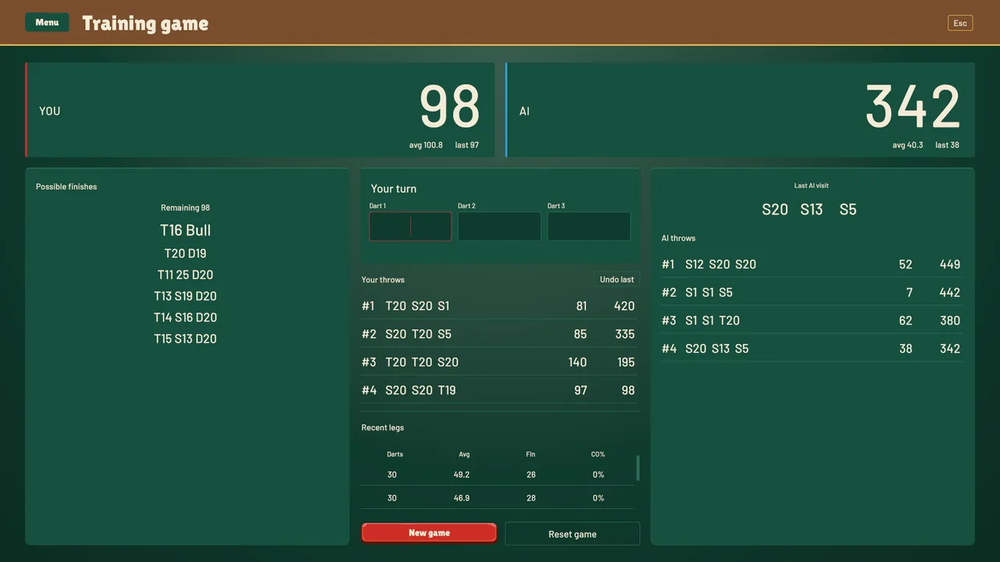
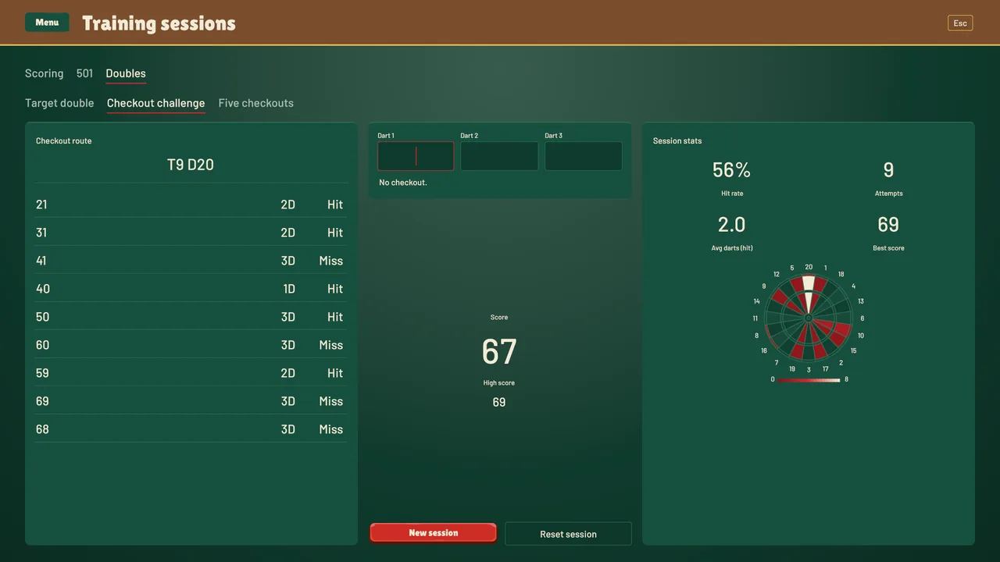
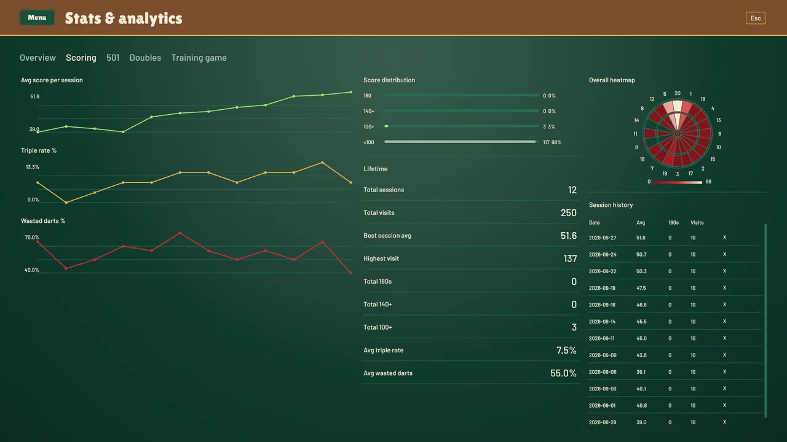

BullseyeQ
UnityC#
BullseyeQ ist eine Trainings-App für Dartspieler. Sie wertet jeden Wurf aus und zeigt, welche Übung als Nächstes am meisten bringt. Entstanden ist sie in Unity.

Die Idee
Viele Dartspieler trainieren nach Gefühl. Sie werfen auf die Triple 20 und hoffen auf Fortschritt. Wo die Punkte wirklich verloren gehen, bleibt dabei oft unklar. BullseyeQ setzt genau hier an. Die App begleitet das Training direkt am Board und erfasst jeden Wurf. Nach wenigen Sessions macht sie die eigenen Schwächen sichtbar.
Aus der Auswertung folgt eine konkrete Übung. Gespielt wird sie als eigener Spielmodus und nicht als Pflichtaufgabe. So verbindet BullseyeQ Sportwissenschaft mit Gameplay-Programmierung. Die Trainingslehre sagt, welche Übung aus welcher Schwäche folgt. Die Spielmechanik sorgt dafür, dass man sie freiwillig wiederholt.
Worum es geht
BullseyeQ bietet vier Trainingsbereiche: Scoring, 501, Doubles und ein Trainingsspiel gegen einen Computergegner. Aus den Würfen berechnet die App die im Dart üblichen Kennzahlen. Dazu gehören der 3-Dart-Average, die Wasted-Darts-Quote und die Checkout-Quote. Eine Heatmap zeigt, wo die Darts tatsächlich landen. Liniendiagramme zeigen den Verlauf über alle Sessions.
Ab drei abgeschlossenen Sessions greift eine regelbasierte Analyse. Sie nennt die wichtigste Baustelle und den passenden Trainingsmodus gleich mit. Jede Empfehlung zeigt die Zahl, aus der sie folgt. Im Trainingsspiel wartet ein Gegner, der sich dem eigenen Niveau anpasst.
Den Anstoß gab mein eigenes Darttraining. Von der Idee über das Datenmodell bis zur Oberfläche ist die App zusammen mit einem Coding Agent entstanden. Die Dart-Fachlogik, die Kennzahlen und die Schwellenwerte kommen von mir. Die UI-Grafiken stammen aus dem Asset-Pack GUI-TheStone von Layer Lab. Layout, Theme und Code sind von mir.
Highlights & Herausforderungen

Empfehlungen mit Begründung
Eine Empfehlung ist nur so gut wie ihr Maßstab. Ohne Vergleichswert ist ein 3-Dart-Average nur eine Zahl. Die eigentliche Hürde lag deshalb vor dem Code. Ich habe brauchbare Schwellen selbst recherchiert und bewusst auf wenige Stufen reduziert. Beispiele sind ein Average unter 35 oder unter 50 Punkten. Ein weiteres ist eine Wasted-Rate über 45 % bei einem Ziel von höchstens 35 %.
Das ist kein Profi-Benchmark. Die Stufen ordnen grob ein und mehr sollen sie nicht. Dafür rät die Analyse nicht. Sie rechnet deterministisch und nachvollziehbar. Gleiche Wurfdaten ergeben immer dieselbe Empfehlung.

Ein Gegner auf Augenhöhe
Training macht mehr Spaß mit einem Gegner, der fordert und nicht überfordert. Im 501-Trainingsmatch übernimmt das die DartAI. Sie kalibriert ihre T20-Quote und ihre Checkout-Quote auf die letzten fünf Legs des Spielers. Auf die T20-Quote kommen ±10 % Varianz. Die Checkout-Quote bleibt ohne Varianz. So spielt der Gegner ungefähr auf dem eigenen Niveau und wächst mit. Dahinter steckt reine statische Logik ohne Unity-Abhängigkeit.

Übungen als Spielmodus
Aus einer Empfehlung wird kein Merkzettel. Sie führt direkt in einen Spielmodus, der gezielt an der erkannten Schwäche arbeitet. Fürs Finish gibt es ein Checkout-Chart mit den möglichen Wegen. Dazu kommen eigene Checkout-Modi wie „Five Checkouts“ und „Checkout Challenge“. Eine Übung, die sich wie Darts anfühlt, wird wiederholt. Eine Tabelle nicht.

Tests und eigene Diagramme
Auf die Auswertung muss man sich verlassen können. Deshalb ist die App mit 565 EditMode-Testfällen in 20 Testklassen abgesichert. Sie reichen von der Fachlogik bis zu den Verträgen der Oberfläche. Zur Fachlogik gehören Analyzer, Checkout-Chart und 501-Session. Auch der JSON-Roundtrip der gespeicherten Daten ist getestet. Für die Auswertung habe ich zwei eigene UI-Toolkit-Elemente gebaut: eine Dartboard-Heatmap und ein Liniendiagramm.
Arbeiten mit einem Coding Agent
BullseyeQ war zugleich mein Testfeld für die Arbeit mit einem Coding Agent in Unity. Ich wollte herausfinden, welche Elemente sich auf diesem Weg umsetzen lassen und wie. Die Erfahrung daraus prägt, wie ich heute arbeite. Ich weiß jetzt besser, was ich vorher selbst durchdenken muss. Und ich weiß, was ich abgeben kann.